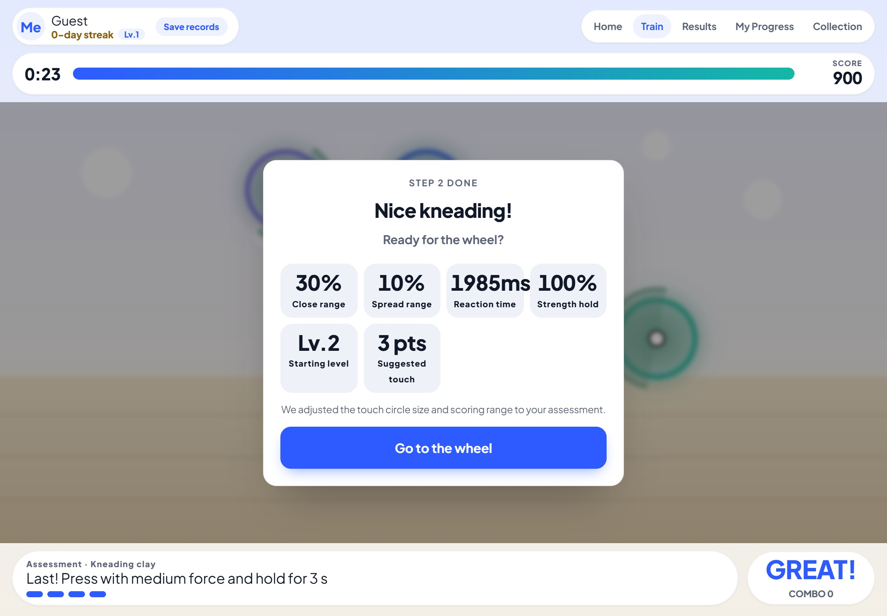

01 / ADAPTIVE DIAGNOSTIC CALIBRATION
Set a starting point that fits today
THE PROBLEM
After discharge, people must judge their hand’s daily range and choose a difficulty on their own. A fixed level may feel too easy or too demanding.
HOW THE INTERFACE RESPONDS
A short readiness check samples finger range, response speed and hold stability, then proposes a touch target, tolerance and starting level for that session.
WHY IT MATTERS
Gives practice a more considered starting point instead of asking users to guess.
CONCEPT DIRECTION · CALIBRATION THRESHOLDS NEED OT + USER VALIDATION